What is Computer Aided Design(CAD)?
Computer Aided Design, or CAD for short, is the process of using digital means to create and design a 3D or 2D model which can be printed out using a 3D Printer.
It is also used more commonly to create models or simulate physics or the look or material of a design.
What programs do we use for CAD?
Some common programs that are used unclude Maya, Blender, and Fusion360. However, for the purpose of this module, Fusion360 will be used as the main software used in terms of 3D software. However, there is also another method, which relies on the use of 2D drawings.
2D Raster
What is a 2D Raster? It can be created in software such as Gimp and Photoshop. In my case, I will be using Photoshop as it is something I have prior access to and am familiar with.
Some common tools to take note of would be:
- Crop
- Crop is used to simply remove portions of a picture that you do not wish to keep. In Photoshop, it can be accessed by clicking this:
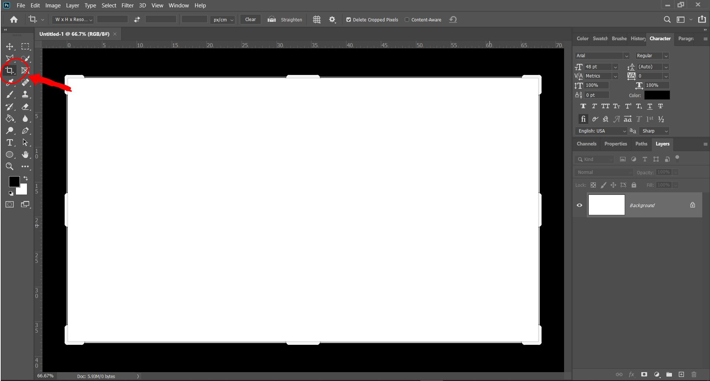
Upon clicking this, margins for cropping the canvas will appear, as such:
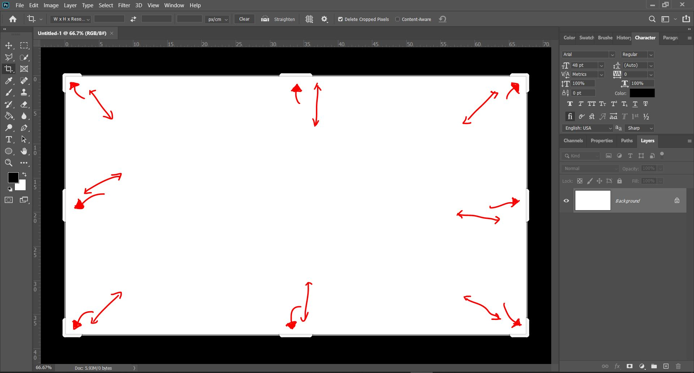
By moving and reszing these margins, you will be able to crop out sections for the canvas. You can confirm the crop by simply pressing ENTER when you're done. There are other methods or crop or remove parts of an image that are more precise, which include the use of selection tools or marquees, but that is not needed generally.
- Resize and Resolution
- Resize is used to change the image size, which can be easily done within a few steps. Below, I have an image that I'd like to resize, and I have it opened in Photoshop. Now, I will navigate to the image tab in the tabs at the top bar, and select Image Size.
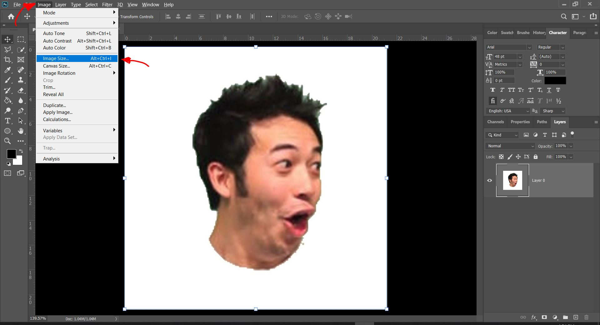
From here, I can change and and control the image size, by editing the various measurement units and the measurements of the image's size itself, along with the resolution of the image.
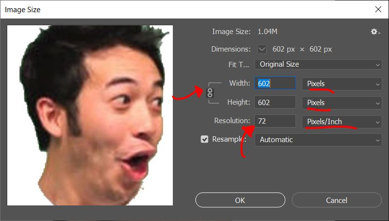
In Photoshop, you are also able to create a 2D Vector, which can also be done in Inkscape, which is a free alternative.
Some common tools to take note of that are used to create a 2D Vector are:
- Drawing Shapes and Objects
- Drawing Objects and Shapes are the most basic thing you can do, and there are two tools you can use to do so. The shape tool, and the Brush tool, as shown below.
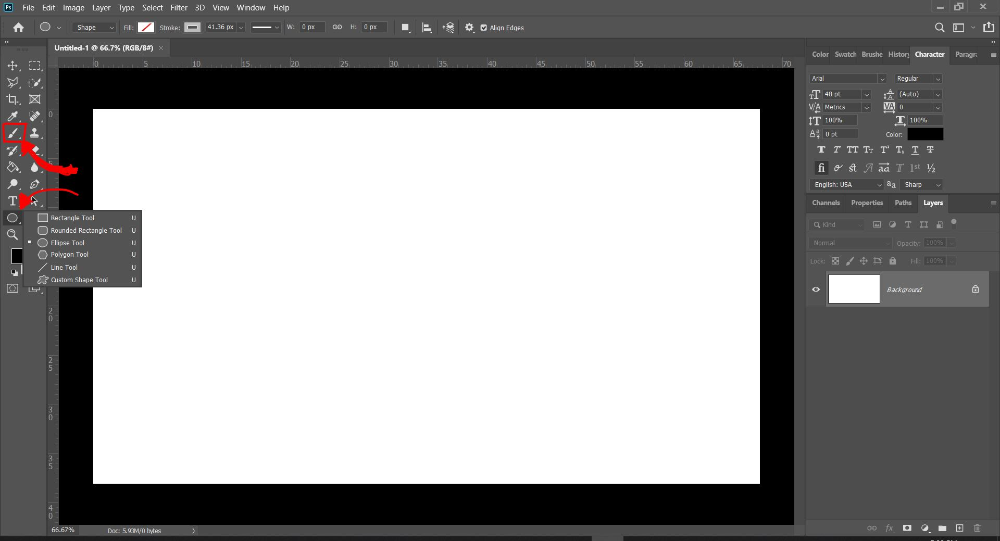
The Brush tool can be used for hand drawn vectors, giving more artistic people more freedom to create vector graphics as they wish, while on the other hand, the Shape tool has multiple preset shapes that you can use, allowing you to use them and manipulate them as you wish.
- Add Text
- If you would like to add some text onto your Vector, you can use the text tool, as shown below.
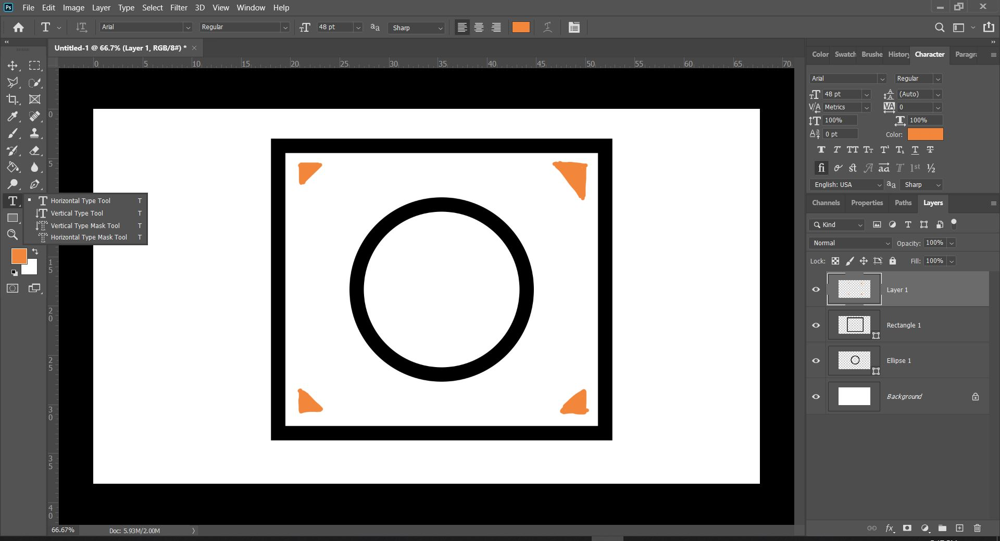
As you can see, there are multiple types of text you can put according to your liking, depending on your choice, all of which can be selected by right clicking on the tool to change to another type of text.
- Trace Bitmap/Vectorize
- When resizing or changing the image resolution, the image quality can often take a hit, and one way to counter that problem is to change the image from a bitmap(JPEG and PNG), to a Vector image by Vectorizing it.
First of all, you will need to create paths, or trace out your bitmap image. In Photoshop, you are able to press CTRL and click the thumbnail in your layers for ease to create a path as shown below.
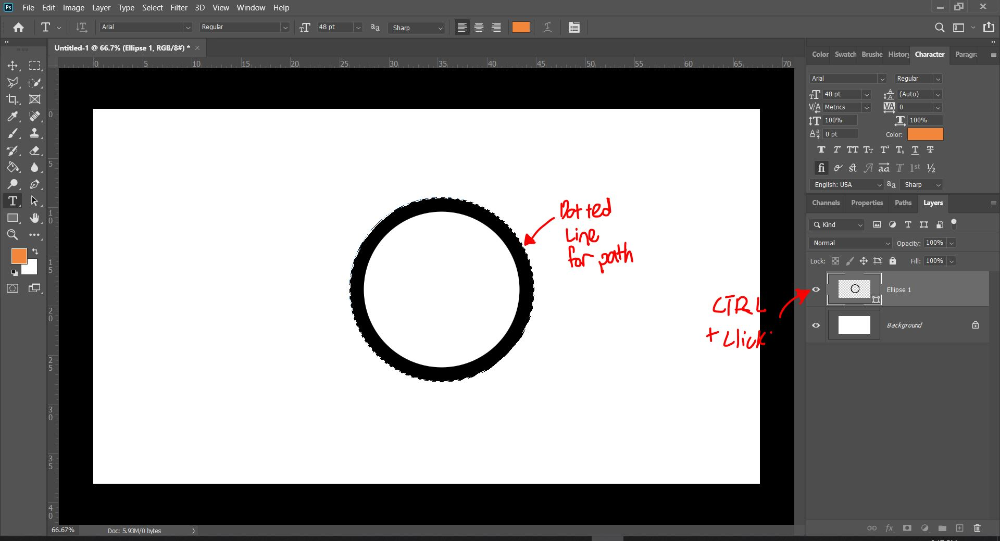
As shown above, I have selected and created a path, tracing the bitmap as indicated by the dotted line. Now that I have done that I will click the selection tool on the toolbar, and right click the selected image.
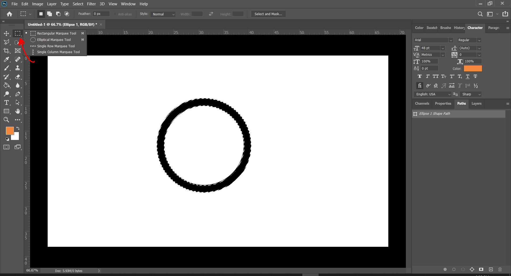
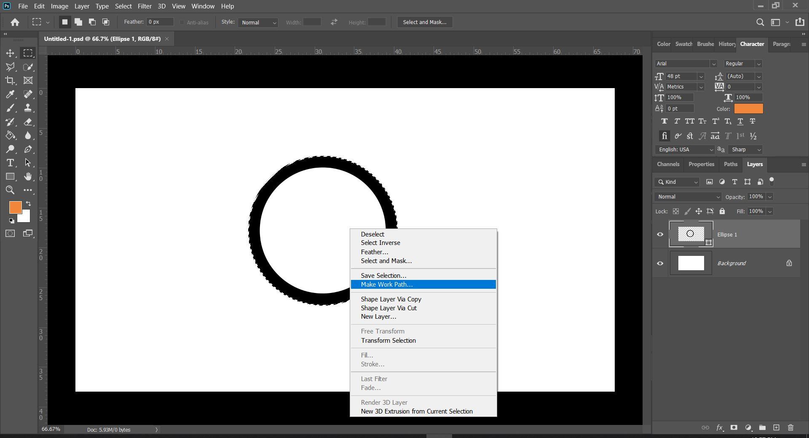
By clicking this, it will show you a list of options, and in this case you should pick "Make Work Path...". Upon doing so, it will create a window asking for the "Tolerance". This refers to the number of points used to anchor or draw the image when it is resized. We can leave this at 1 for now.
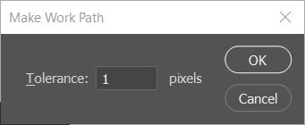
Now that you have these paths, you will need to choose the Direct Selection Tool, and right click on the image to give you a list of options, from which you will pick "Create Vector Mask", and this will Vectorise your bitmap image.
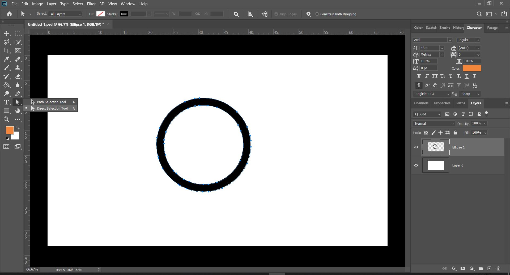
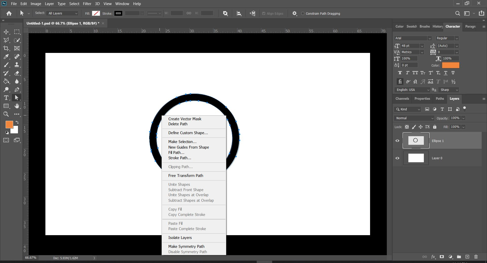
This means that when you scale this image to different sizes, it will now retain the same quality and not produce jagged lines.
Now that we have explored how to create a 2D Vector, we can move onto the various tools that is provided by Fusion360 to make our models.
Tools in Fusion360
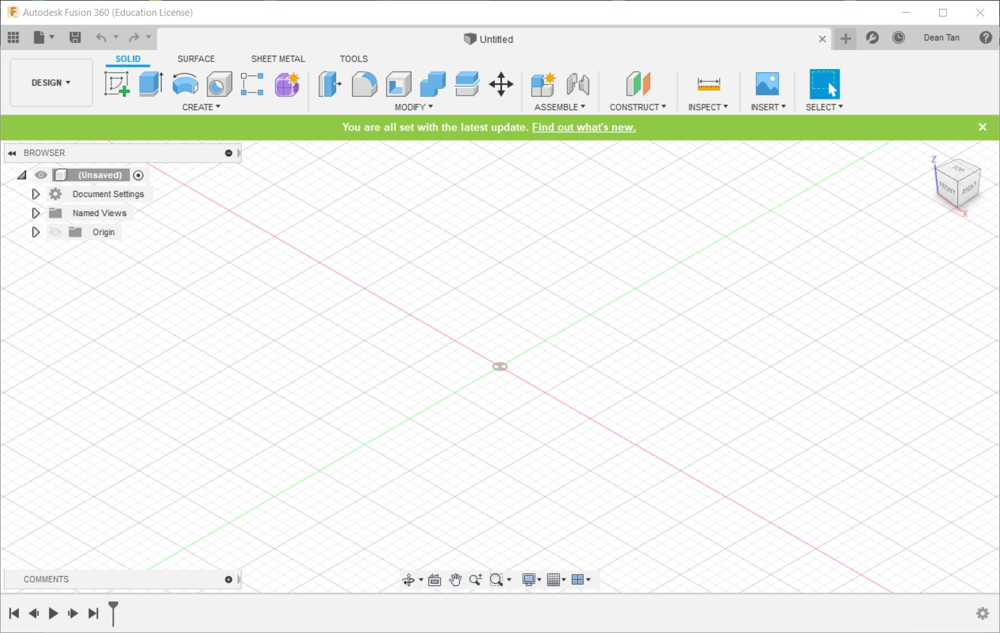
This is how Fusion360's user interface looks. Now let's go over the different tools the user is given in Fusion360.
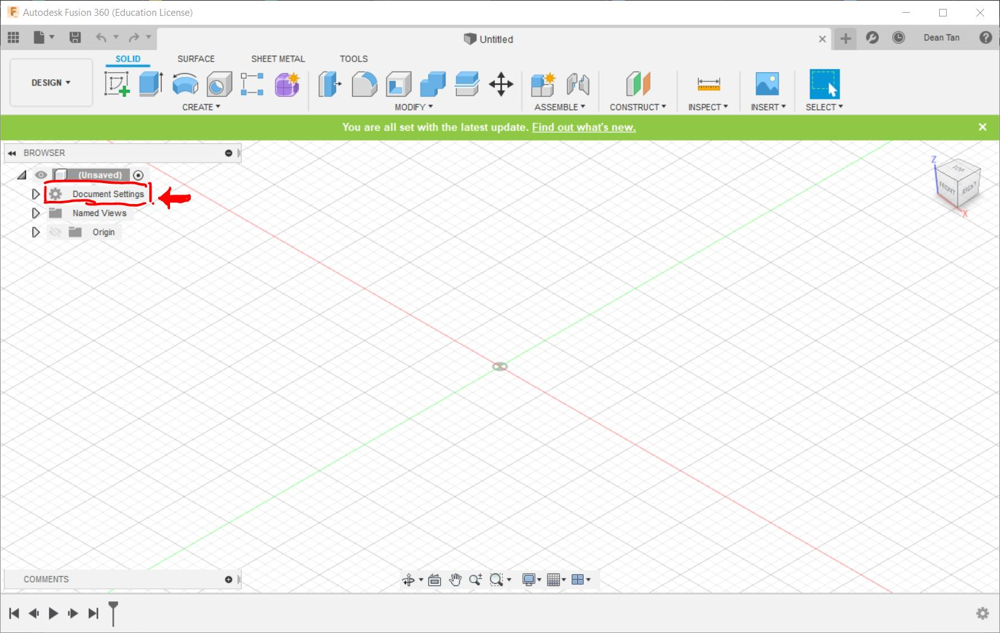
This is the Document Settings tab. You can edit the measurement unit used for the design in this tab.
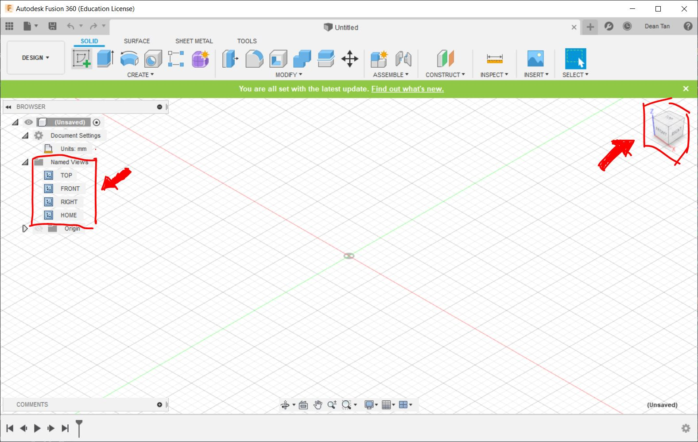
These are used to change the view of the model. There is also a Home Icon on the top right allowing you to reset the view to the standard orthographics view.
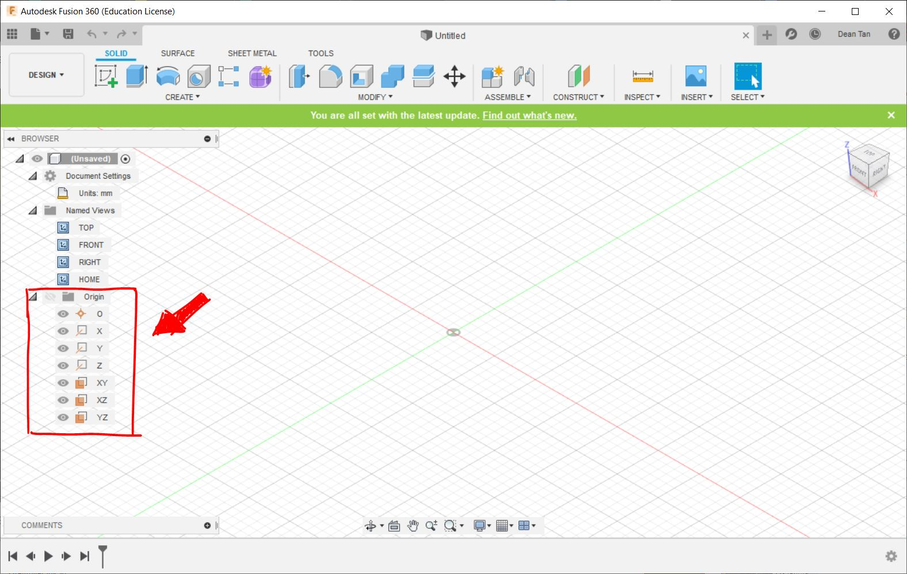
This is used to highlight the various axes and planes on different axes.
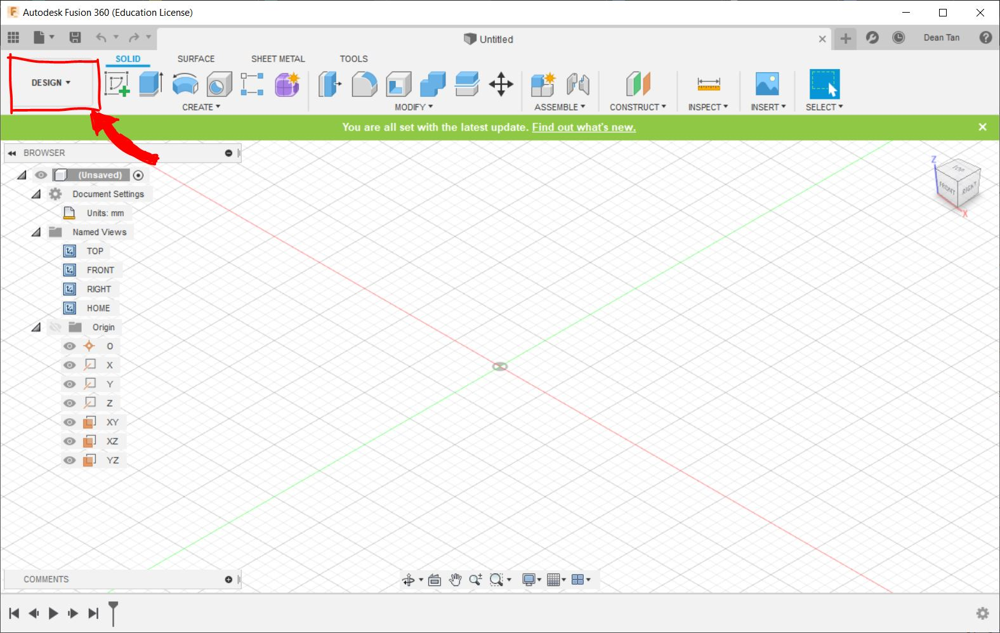
This is the Design tab. Click this to access and change the mode of Fusion360. Fusion360 is a versatile software that allows you to do various tasks, and it can be switched between 6 modes. These modes are:
- Design: This gives the user access to the Design Workspace, used primarily to create mechanical designs that contain mostly prismatic geometry. You can access commands to create solid bodies. This is the mode I will be primarily using in the course of this module.
- Render: This is used to generate realistic renderings of the design.
- Animation: This is used to create animations of how the design should be operated or assembled.
- Simulation: This mode performs simulation to determine how loads lead to deformation and failure, which can be used to help people identify or determine if and how a part will fail.
- Manufacture: This generates tool-path strategies for the design to be fabricated.
- Drawing: This is used to load a drawing or animation, such as the 2D Raster or Vector we had drawn and created in Photoshop.
We will be mainly using the design tab for creating a model from scratch, but if you have a 2D Drawing you can use the Drawing tab to import your drawing into Fusion360 to make it 3D. But for now, let's start with creating a model from scratch.